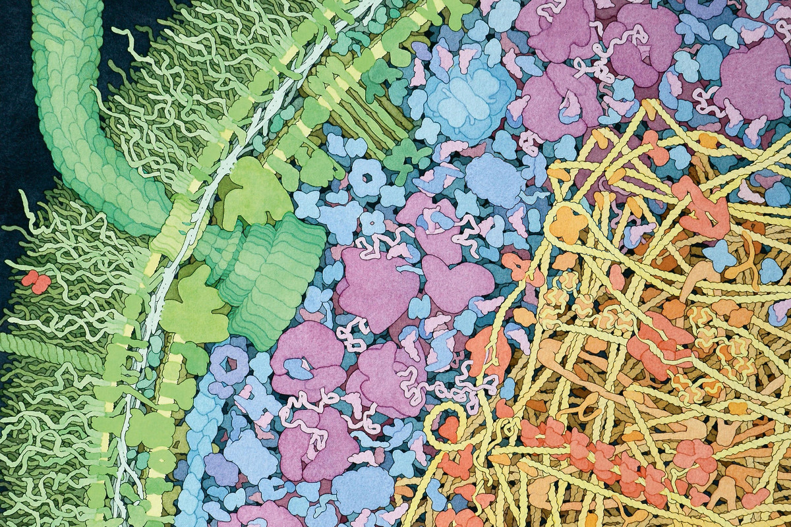

Hi, I'm Alistair Tiefenbacher, a Clinical AI & Data Science Lead
Building and validating machine-learning systems for digital health and medical devices, with a background spanning clinical decision support, statistics, genomics and translational cancer research.
About Me
I'm a senior data scientist with more than a decade of experience in clinical AI and digital health, combining hands-on machine learning with technical leadership, model validation and regulated medical-device development. At Xund, I develop and validate clinical machine-learning systems while leading cross-functional technical work across data science, medical, product and engineering. Previously, I led the data science team at Symptoma and worked in translational cancer research at the Cancer Research UK Cambridge Institute. I hold a PhD in Statistics from the University of Oxford. My background spans clinical decision support, EHR analytics, statistical modelling, genomics and translational cancer research, and I have co-authored more than 15 peer-reviewed publications across these fields.
Current Work
My work focuses on the development and rigorous validation of machine-learning systems for clinical digital-health products, including regulated medical devices. I combine hands-on modelling and statistical evaluation with technical leadership, product planning and cross-functional collaboration.
At Xund, I develop and validate clinical ML systems across several products. Recent work includes redesigning a Health Check modelling approach, improving predictive performance by 10% (measured by concordance index), and building automated validation tooling that reduced the time required to validate a new target illness by more than 80%.
Education
2012-2017: Doctor of Philosophy (PhD) in Statistics
Department of Statistics, University of Oxford, United Kingdom
2007-2012: Master of Chemical Physics, 1st Class Hons, Industrial Exp.
Department of Chemistry, University of Edinburgh, United Kingdom
2010-2011: International Exchange Student
Department of Chemistry, Nanyang Technological University, Singapore
Experience
2024 onwards: Senior Data Scientist, Xund, Vienna
Develop and validate machine-learning systems for clinical digital-health products, including Class I and Class IIa medical devices, while leading cross-functional technical work across data science, medical, product and engineering.
2021-2024: Chief Data Scientist, Symptoma, Vienna
Led Symptoma's data science team and expanded its remit into EHR analytics and broader clinical decision-support applications, including methods to identify patients with potentially undiagnosed rare diseases. Contributed data-science work to the €5m PERSIST and €10.8m AICCELERATE Horizon 2020 research consortia.
2020-2021: Senior Data Scientist, Symptoma, Vienna
Developed and validated machine-learning methods for Symptoma's multilingual clinical symptom checker. Co-developed its COVID-19 screening system, which achieved 96.3% accuracy in peer-reviewed evaluation and was subsequently deployed by the City of Vienna, alongside work on multilingual NLP localisation and comparative clinical-AI validation.
2017-2020: Postdoctoral Researcher, CRUK, University of Cambridge
Performed bioinformatic and statistical analysis across translational breast-cancer studies spanning ctDNA, genomics, transcriptomics and single-cell data, contributing to work published in Nature Genetics, Nature Communications and Cancer Cell.
2012-2017: Doctoral Student, University of Oxford
Used statistical and bioinformatic methods to investigate how mRNA sequence encodes structural information beyond the amino-acid sequence.
2015: Visiting Researcher, UCB
Developed an in-house application to identify and track emerging disruptive technologies.
2011: Visiting Academic, UC Berkeley
Four-month research placement in computational ultrafast spectroscopy.
2011: Student Researcher, A*STAR Institute of High Performance Computing
Six-month full-time research placement during an international exchange year, using molecular simulation to study solvation and partial molar volumes.
Publications
Cancer Research & Precision Medicine
Modeling Drug Responses and Evolutionary Dynamics Using Patient-Derived Xenografts Reveals Precision Medicine Strategies for Triple-Negative Breast Cancer
Cancer Research, DOI: 10.1158/0008-5472.CAN-24-1703 (2025)
A large-scale retrospective study in metastatic breast cancer patients using circulating tumour DNA and machine learning to predict treatment outcome and progression-free survival
Molecular Oncology, DOI: 10.1002/1878-0261.70015 (2024)
Landscapes of cellular phenotypic diversity in breast cancer xenografts and their impact on drug response
Nature Communications, DOI: 10.1038/s41467-021-22303-z (2021)
Landscape of G-quadruplex DNA structural regions in breast cancer
Nature Genetics, DOI: 10.1038/s41588-020-0672-8 (2020)
Metabolic Imaging Detects Resistance to PI3Kα Inhibition Mediated by Persistent FOXM1 Expression in ER+ Breast Cancer
Cancer Cell, DOI: 10.1016/j.ccell.2020.08.016 (2020)
Shieldin complex promotes DNA end-joining and counters homologous recombination in BRCA1-null cells
Nature Cell Biology, DOI: 10.1038/s41556-018-0140-1 (2018)
Digital Health & Medical AI
Multilingual Framework for Risk Assessment and Symptom Tracking (MRAST)
Sensors, DOI: 10.3390/s24041101 (2024)
Machine Learning Algorithms to Predict Breast Cancer Recurrence Using Structured and Unstructured Sources from Electronic Health Records
Cancers, DOI: 10.3390/cancers15102741 (2023)
An artificial intelligence-based approach for identifying rare disease patients using retrospective electronic health records applied for Pompe disease
Frontiers in Neurology, DOI: 10.3389/fneur.2023.1108222 (2023)
Correlating global trends in COVID-19 cases with online symptom checker self-assessments
PLOS ONE, DOI: 10.1371/journal.pone.0281709 (2023)
Symptoms associated with a COVID-19 infection among a non-hospitalized cohort in Vienna
Wiener klinische Wochenschrift, DOI: 10.1007/s00508-022-02028-9 (2022)
An artificial intelligence-based first-line defence against COVID-19: digitally screening citizens for risks via a chatbot
Scientific Reports, DOI: 10.1038/s41598-020-75912-x (2020)
Diagnostic Accuracy of Web-Based COVID-19 Symptom Checkers: Comparison Study
Journal of Medical Internet Research, DOI: 10.2196/21299 (2020)
Academic & Methodological
10 simple rules for surviving an interdisciplinary PhD
PLoS Computational Biology, DOI: 10.1371/journal.pcbi.1005512 (2017)
Variation and decomposition of the partial molar volume of small gas molecules in different organic solvents derived from molecular dynamics simulations
The Journal of Chemical Physics, DOI: 10.1063/1.4854135 (2013)
Theoretical simulation and preparation of binary and ternary combinatorial libraries by thermal PVD
Physica Status Solidi A, DOI: 10.1002/pssa.200983302 (2010)